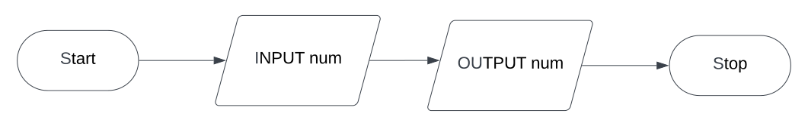

A flowchart is a set of symbols put togther with commands
that are followed to solve a problem
Each flowchart begins and ends with a terminator box
These terminator boxes are visualized via an oval
Input and Output
Algorithms need to output messages(such as text). They also need to take in data from the user
We store small amounts of data as variables.
Variables are defined in parallelograms, similar to outputs which are also printed the same.

In the flowchart above, num is our
variable. We take the input from the user and
output it to be displayed.
Processing box
Processing in a program talks about a change being made to something.
The table below shows different mathamatical operators that are used in processing boxes.
Operator
Description
example
+
Addition
num = 10 + 3
-
Subtraction
num = 10 - 3
*
Multiplication
num = 10 * 3
/
Division
num = 10 / 3
^
Power of
num = 10 ^ 3
MOD
Modulus(remainder)
10 MOD 3 = 1
Conditions
A condition in a flowchart is a visual representation of a decision-making process.
They are represented using a diamond-ish shape. Following the syntax of IS'X'
'operator''y'?
For ex- ISnum>count ?
Important questions
warning
Input 10 numbers and output the largest number
We initialize 2 variables max as 0 among with a counter that we keep to measure the number of inputs
After letting the user input a number we use a condition to see if the number is less than the max value
If it is, then we set our number as the new max
The counter updates regardless. Count=count+ 1 keeps adding 1 per input.
Finally, we check if our count is equal to 10. If it is then we can output max
If it isnt, then the flowchart loops back to the input step, where we are asked to input a number again.
Input 10 numbers and output the smallest number
We initialize 2 variables, count as 0 and min as 1000. We assume that 1000 is the boundary for the largest
input, since we cant use infinity, we use 1000. We then ask for an input. Check to see if our input is less than
the min, or 1000. If it is then we set the new value of min as our num. If it isnt, the count goes up regardless.
We finally check to see if count is equal to 10, if it is then we output the min. Otherwise the flowchart loops to
where we are asked to input the num again.
Pseudocode
Pseudocode is the language that is used to display an algorithm
An output in pseudocode can use a command word such as
OUTPUT, WRITE or PRINT. An input can use a command word such as INPUT.
similar to flowcharts, they need to be stored in a variable
OUTPUT "Hello World"
num = INPUT
Conditions
Selection uses the keyword IF and THEN. IS in flowcharts are replaced with IF and the ? with THEN
IF age > 18 THEN
OUTPUT("You are old enough")
Else
OUTPUT("You are not old enough")
Endif
Multiple conditions can be created using ELSEIF.
IF cost >= 100 THEN
OUTPUT "That is far too expensive"
ELSEIF cost >= 80 THEN
OUTPUT "That’s a bit too expensive"
ELSEIF cost >= 60 THEN
OUTPUT "That is reasonable"
ELSEIF cost >= 40 THEN
OUTPUT "That looks like a good deal"
ELSE
OUTPUT "I think that is too cheap"
ENDIF
Case... End case
This is a different selection statement. CASE uses the keyword SELECT, followed by the variable we are checking.
Then it has the keyword CASE followed by the condition.
Selecting a menu choice of 1, 2 or 3
CASE 1: OUTPUT "You chose 1"
CASE 2: OUTPUT "You chose 2"
CASE 3: OUTPUT "You chose 3"
Loops
Iteration is a loop to repeat the section of code for a fixed number of times
until required outcome is achieved
A For loop is count controlled
smallest = 9999
FOR counter = 0 to 50
INPUT number
If number < smallest THEN
smallest = number
ENDIF
NEXT counter
answer = smallest * smallest
OUTPUT answer
A REPEAT UNTIL loop is condition controlled. This means the loop will run until the condition
at the end has been satisfyied.
value = 1
WHILE value <= 100
value = value + value
ENDWHILE
OUTPUT value